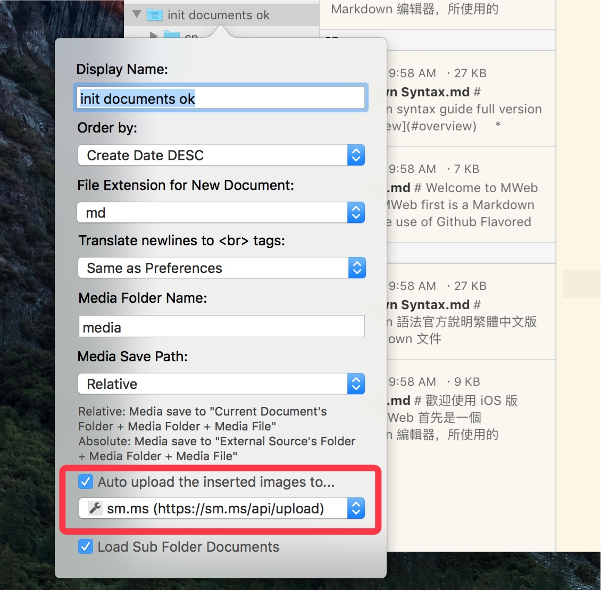
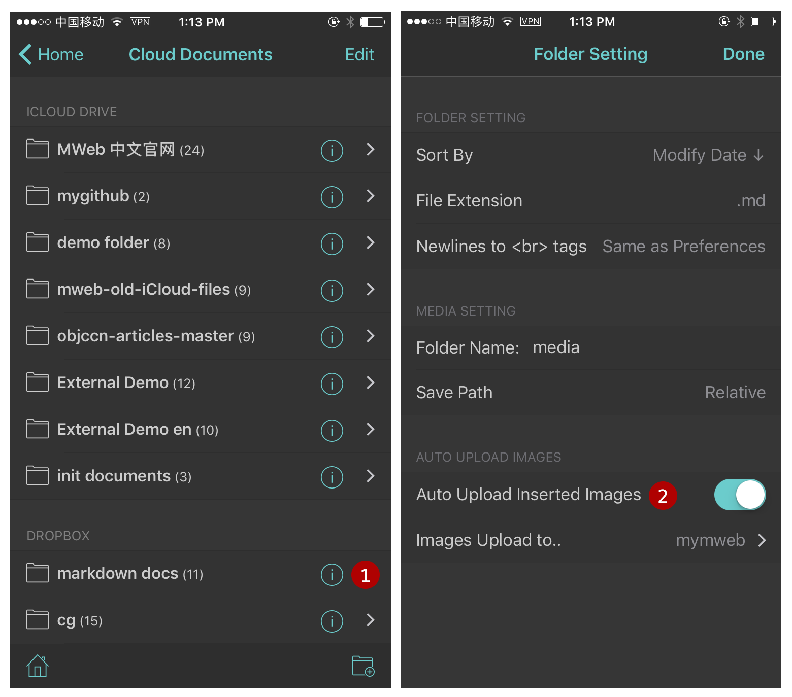
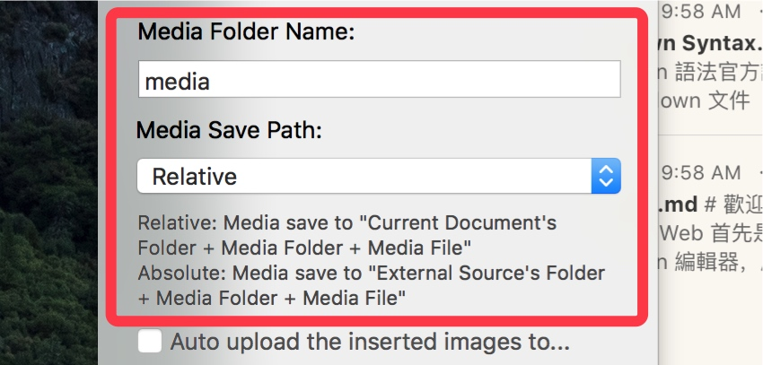
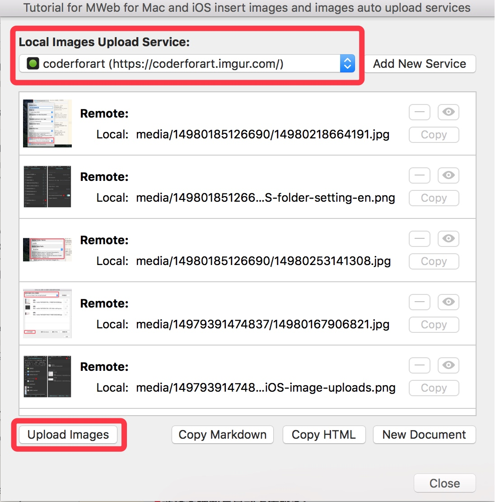
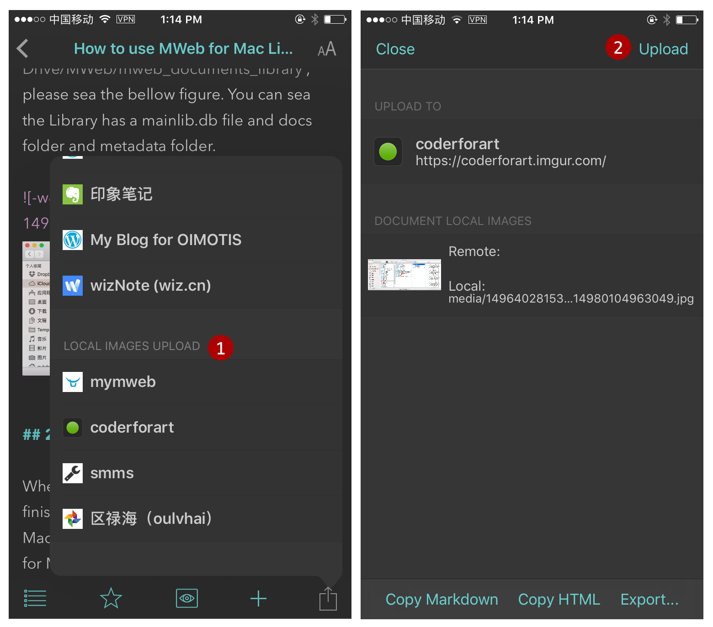

Tutorial for MWeb for Mac and iOS insert images and images auto upload services
There is two ways to do after inserted a image in MWeb.
1. Auto upload to Images Upload Service when insert image
This way only available in MWeb for Mac External Mode and MWeb for iOS Cloud Documents.
In MWeb for Mac: right click the External folder, choose Edit, then you can sea the below figure:

Just Enable "Auto upload the inserted images to..." and choose the images upload services.
In MWeb for iOS: go to the Cloud Documents and tap (i) button to open Folder Setting. Please sea the below figure:

2. Copy the image to relative location of the document.
This way be set by default, we suggest to use this way. Just disable "Auto Upload Inserted Images", the default way is available.
in MWeb for Mac: right click the External folder, choose Edit, then you can sea the below figure:

The "Media Save Path" is set to "Relative" by default. for example: when the document "folder/sub/sub2/sub3/doc.md" insert a image, the image will save to "folder/sub/sub2/sub3/media", the markdown is . but when you set the "Save Path" to "Absolute", the image will save to "folder/media", the markdown is . There is no need to setting in generally, but if you want to edit Hexo, Octpress, Jekyll markdown document, you may set the "Save Path" to "Absolute".
In MWeb for iOS: go to the Cloud Documents and tap (i) button to open Folder Setting.
Upload the document's Local images to the Images Upload Services
There is easy to upload the document's Local images to the Images Upload Services.
In MWeb for Mac: click "Share" button - "Upload Local Images to..." or Menu: "Publish" - "Upload Local Images to...", then you will sea the below figure:

All the document's local images will be list in the panel, you can choose the Images Upload Services and click "Upload Images" button to upload the local images. When the local images uploaded, then use "Copy Markdown" or "Copy HTML" button. when you click these button, the document's local images address will be replace to the remote address and copy to the clipboard.
In MWeb for iOS: Just tap "Share" button like below:
